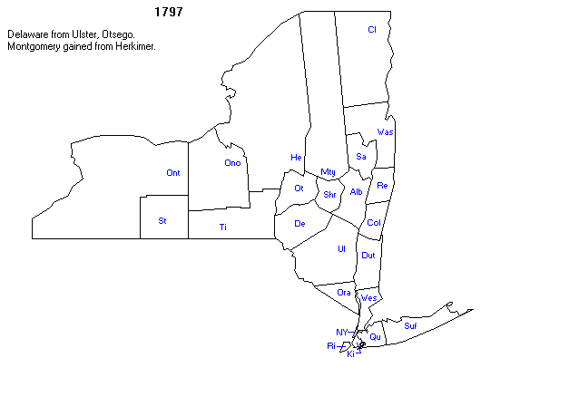
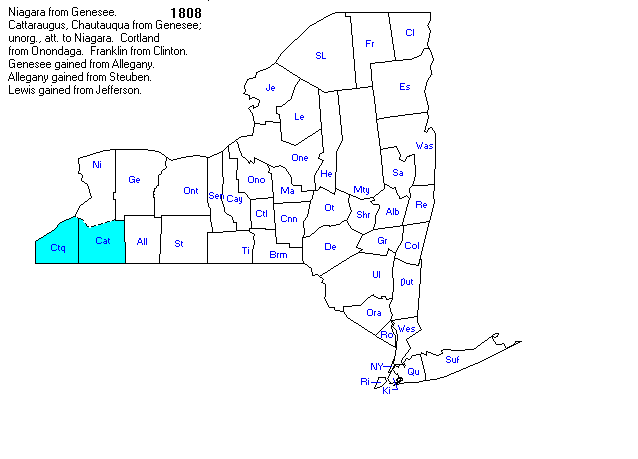
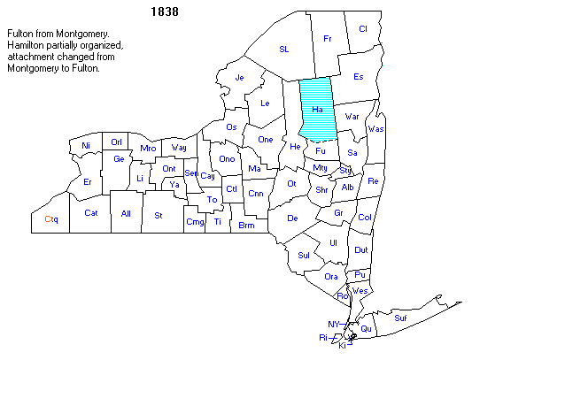
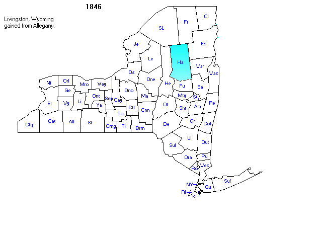

In 1609, the Dutch East India Company
(located in Amsterdam) hired Henry Hudson, an English sea captain and explorer,
to find a passage to Asia. Hudson ended up exploring the waters off the east
coast of America landing first in Newfoundland and then traveling down to the
Chesapeake Bay before sailing up the Hudson River to Albany. Upon returning to
the Netherlands, Hudson reported that he had found a fertile land and an
amicable people willing to engage his crew in small-scale bartering. This
stimulated interest in exploiting this new trade resource, and merchants such
as Arnout Vogels sent the
first follow-up voyages to exploit this discovery as early as July 1610.
Dutch ship captains Adriaen
Block, Hendrick Christiaensen,
and Cornelius Jacobsen Mey explored, surveyed, and
mapped the area between Maryland and Massachusetts in four voyages made between
1611 and 1614. These surveys and charts were consolidated
in Block's map, which used the name New Netherland for the first time (it was
also called Nova Belgica on other maps).

The immediate and intense competition
among Dutch trading companies in the newly charted areas led to disputes in
Amsterdam and calls for regulation. The States General (the governing body of
the Republic of the Seven United Netherlands) proclaimed on March 17, 1614,
that it would grant an exclusive patent for trade between the 40th and 45th
parallels. This monopoly would be valid for four voyages, and all four voyages
had to be undertaken within three years of the award.
The New Netherland Company, an alliance of trading companies, won the patent
and used Adrian Block's map. Soon after, traders built Fort Nassau on Castle
Island in the Albany area up Hudson's river.
The States General later granted a charter
to the Dutch West India Company on June 3, 1621, giving the Company the
exclusive right to operate in West Africa and the Americas. Willem Usselincx, one of the founders of the Company, believed a
main goal of the Company should be to establish colonies in the New World. The
States General rejected this, preferring trading posts with small populations
and a military presence to protect them. As such, the Company did not initially
focus on colonization in America.
Like the French in the north, the Dutch
focused their interest on the fur trade. To that end, they cultivated
contingent relations with the Five Nations of the Iroquois to procure greater
access to key central regions from which the skins came. Company policy
required land to be purchased from the native
communities. The Dutch West India Company would offer a land patent, and the
recipient would be responsible for negotiating a deal with representatives of
the local tribes. However, the Native Americans had vastly different
conceptions of ownership and use of land than the colonists did. The colonists
thought that their proffer of gifts was a trade agreement and defense alliance,
which gave them exclusive rights to farming, hunting, and fishing. Often, the Native
Americans did not vacate the property, or reappeared seasonally according to
their migration patterns. They were willing to share the land with the
colonists, but the Native Americans did not intend to leave or give up access.
This misunderstanding and other differences led to violent conflict later.
After becoming a province of the Dutch
Republic in 1624, the Dutch West India Company brought colonists to Fort Orange
(Albany) and Noten Eylant
(Governors Island, NYC). Many of the settlers were not Dutch, but Walloons,
French Huguenots, or Africans (most as enslaved labor, some later gaining
"half-free" status). Peter Minuit became Director of New Netherland
in 1626, and built Fort Amsterdam on the island of Manhattan to serve as the
capitol of the province. The port city of New Amsterdam outside the walls of
the fort became a major hub for trade between North America, the Caribbean, and
Europe.
In the hope of encouraging immigration,
the Dutch West India Company established the Charter of Freedoms and Exemptions
in 1629, which gave it the power to offer vast land grants and the title of
patroon to some of its invested members. The vast tracts were
called patroonships, and the title came with powerful manorial rights
and privileges, such as the creation of civil and criminal courts and the
appointing of local officials. In return, a patroon was
required by the Company to establish a settlement of at least 50
families within four years who would live as tenant farmers.
Willem Kieft was
Director of New Netherland from 1638 until 1647. The colony had grown somewhat
before his arrival, reaching 8,000 population in 1635. Yet it did not flourish,
and Kieft was under pressure to cut costs. The colonists became
disenchanted with Kieft, his ignorance (and massacre)
of indigenous peoples, and the unresponsiveness of the Company to their rights
and requests, leading them to submit the Remonstrance of New Netherland to the
States General demanding full rights as citizens of the province of the
Netherlands.
Peter Stuyvesant arrived in New Amsterdam
in 1647, the only governor of the colony to be called
Director-General. During the period of his governorship, the province
experienced exponential growth, though territory was being
nibbled at by the English to the north and the Swedes to the south and
Native Americans were trying to contain further Dutch expansion in the heart of
the province. The colonists again appealed to the States General and were
granted a measure of self-governance (with Stuyvesant being recalled in April
1652), but the orders were rescinded with the outbreak of the First Anglo-Dutch
War a month later.
According to historian Eleanor Bruchey:
Peter Stuyvesant
was essentially a difficult man thrust into a difficult position. Quick
tempered, self-confident, and authoritarian, he was determined...to rule firmly
and to repair the fortunes of the company. The company, however, had run the
colony solely for trade profits, with scant attention to encouraging
immigration and developing local government. Stuyvesant's predecessors...had
been dishonest or, at best, inept, so there was no tradition of respect and
support for the governorship on which he could build. Furthermore, the
colonists were vocal and quick to challenge authority....Throughout
his administration there were constant complaints to the company of his
tyrannical acts and pressure for more local self-government....His religious
intolerance also exacerbated relations with the colonists, most of whom did not
share his narrow outlook.
In March 1664, during the Second
Anglo-Dutch War, Charles II of England, Scotland, and Ireland resolved to annex
New Netherland and bring all his kingdoms under one form of government. On
August 27, 1664, four English frigates led by Richard Nicolls sailed into New
Amsterdam's harbor and demanded New Netherland's surrender. They met no resistance
to the capture of New Amsterdam because numerous citizens' requests had gone
unheeded for protection by a suitable Dutch garrison. Thus, on September 8,
1664, Stuyvesant surrendered New Amsterdam to the British, officially
establishing New York City (though not legally confirmed until July 21, 1667,
with the Treaty of Breda). The Dutch briefly recaptured New Netherland in
August 1673 during the Third Anglo-Dutch War, but it was
ceded back to the English in November 1674 in the Treaty of Westminster.
James, Duke of York was
granted a proprietary colony and renamed New Netherland (which included
modern New York, New Jersey, Vermont, southeast Pennsylvania, and Delaware) as
the Province of New York. Yorkshire (Long Island, Staten Island, Manhattan, the
Bronx, and Westchester) became the core of the province. To settle a debt with Sir
George Carteret of the House of Jersey, the Duke of York gifted the land between
the Hudson River and the Delaware River. In 1667, territories between the Byram River and Connecticut River were
split off to become the western half of Connecticut.
A colonial Assembly was
created in October 1683, which then passed the Province of New York
constitution on October 30. On November 1, 1683, the government was reorganized, and the state was divided into twelve
counties, each of which was subdivided into towns. When James ascended the
throne in February 1685 and became King James II, his personally owned colony
became a royal province.







|
County |
County Seat |
Est. |
From |
Named For |
Map |
|
Albany County |
Albany |
1683 |
Original 12 |
James II of England (James VII of
Scotland), Duke of York (English title) and Duke of Albany (Scottish title)
before becoming King |
|
|
Dutchess
County |
Poughkeepsie |
1683 |
Original 12 |
Lady Anne Hyde, Duchess of York
and wife of King James II of England |
|
|
Kings County |
NYC |
1683 |
Original 12 |
King Charles II of England |
|
|
New York County |
NYC |
1683 |
Original 12 |
James II of England (James VII of
Scotland), Duke of York (English title) and Duke of Albany (Scottish title)
before becoming King |
|
|
Orange County |
Goshen |
1683 |
Original 12 |
William of Orange-Nassau, who became
King William III of England |
|
|
Queens County |
NYC |
1683 |
Original 12 |
Catherine of Braganza, Queen of
England and wife of King Charles II of England |
|
|
Richmond County |
NYC |
1683 |
Original 12 |
Charles Lennox, 1st Duke of
Richmond, the illegitimate son of King Charles II of England |
|
|
Suffolk County |
Riverhead |
1683 |
Original 12 |
The county of Suffolk in England |
|
|
Ulster County |
Kingston |
1683 |
Original 12 |
The Irish province of Ulster, then
an earldom of James II of England (James VII of Scotland), Duke of York (English
title) and Duke of Albany (Scottish title) before becoming King |
|
|
Westchester County |
White Plains |
1683 |
Original 12 |
The city of Chester in England |
|
|
Montgomery County |
Fonda |
1772 |
Albany County |
Originally Tryon County after
colonial governor William Tryon, renamed in 1784 after the Revolutionary War general
Richard Montgomery |
|
|
Washington County |
Fort Edward |
1772 |
Albany County |
Originally Charlotte County,
renamed in 1784 after President George Washington |
|
|
Columbia County |
Hudson |
1786 |
Albany County |
Christopher Columbus |
|
|
Clinton County |
Plattsburgh |
1788 |
Washington County (from Albany County) |
George Clinton, 4th Vice President
of the United States and 1st and 3rd Governor of New York |
|
|
Ontario County |
Canandaigua |
1789 |
Land acquired in the Phelps and
Gorham Purchase |
An Iroquoian word meaning
"beautiful lake" |
|
|
Herkimer County |
Herkimer |
1791 |
Montgomery County (from Albany County) |
Nicholas Herkimer, a Revolutionary
War general |
|
|
Otsego County |
Cooperstown |
1791 |
Montgomery County (from Albany County) |
A Native American word meaning
"place of the rock" |
|
|
Rensselaer County |
Troy |
1791 |
Albany County |
Kiliaen
van Rensselaer, an early landholder in New Netherlands |
|
|
Saratoga County |
Ballston Spa |
1791 |
Albany County |
A corruption of a Native American
word meaning "the hill beside the river" |
|
|
Tioga County |
Owego |
1791 |
Montgomery County (from Albany County) |
A Native American word meaning
"at the forks", describing a meeting place |
|
|
Onondaga County |
Syracuse |
1792 |
Herkimer County (from Albany and then Montgomery Counties) |
The Onondaga tribe of Native
Americans |
|
|
Schoharie County |
Schoharie |
1795 |
Albany County and Otsego County (from Albany and then Montgomery Counties) |
A Mohawk word meaning
"floating driftwood" |
|
|
Steuben County |
Bath |
1796 |
Ontario County (acquired after the original 12) |
Friedrich Wilhelm von Steuben, the
Prussian general who assisted the Revolutionary War |
|
|
Delaware County |
Delhi |
1797 |
Otsego County (from Albany and then Montgomery Counties)
and Ulster County |
Thomas West, 3rd Baron De La Warr, an early colonial leader in Virginia |
|
|
Chenango County |
Norwich |
1798 |
Tioga County and Herkimer County (both from Albany and then Montgomery Counties) |
An Onondaga word meaning
"large bull-thistle" |
|
|
Oneida County |
Utica |
1798 |
Herkimer County (from Albany and then Montgomery Counties) |
The Oneida tribe of Native
Americans |
|
|
Rockland County |
New City |
1798 |
Orange County |
Early settlers' description of
terrain as "rocky land" |
|
|
Cayuga County |
Auburn |
1799 |
Onondaga County (from Albany, Montgomery, and then Herkimer Counties) |
The Cayuga tribe of Native
Americans |
|
|
Essex County |
Elizabethtown |
1799 |
Clinton County (from Albany then Washington Counties) |
The county of Essex in England |
|
|
Greene County |
Catskill |
1800 |
Albany County and Ulster County |
Nathanael Greene, a Revolutionary
War general |
|
|
Genesee County |
Batavia |
1802 |
Ontario County (acquired after the original 12)
and land acquired in the Holland
Purchase |
A Seneca phrase meaning "good
valley" |
|
|
St. Lawrence County |
Canton |
1802 |
Clinton County (from Albany then Washington Counties),
Herkimer County (from Albany and then Montgomery Counties),
and Montgomery County (from Albany County) |
The St Lawrence River, which forms
the northern border of the county and New York State |
|
|
Seneca County |
Waterloo |
1804 |
Cayuga County (from Albany, Montgomery, Herkimer, and then Onondaga
Counties) |
The Seneca tribe of Native
Americans |
|
|
Jefferson County |
Watertown |
1805 |
Oneida County (from Albany, Montgomery, and then Herkimer Counties) |
President Thomas Jefferson |
|
|
Lewis County |
Lowville |
1805 |
Oneida County (from Albany, Montgomery, and then Herkimer Counties) |
Morgan Lewis, the 4th Governor of New York |
|
|
Allegany County |
Belmont |
1806 |
Genesee County (from Ontario County, acquired after the original 12, and
newly acquired land) |
A variant spelling of the Allegheny
River |
|
|
Broome County |
Binghamton |
1806 |
Tioga County (from Albany and then Montgomery Counties) |
John Broome, 4th Lieutenant
Governor of New York |
|
|
Madison County |
Wampsville |
1806 |
Chenango County (from Albany, Montgomery, and then Tioga and Herkimer
Counties) |
President James Madison |
|
|
Cattaraugus County |
Little Valley |
1808 |
Genesee County (from Ontario County, acquired after the original 12, and
newly acquired land) |
A word from an uncertain Iroquoian
language meaning "bad smelling banks", referring to the odor of
natural gas which leaked from Cattaraugus Creek |
|
|
Chautauqua County |
Mayville |
1808 |
Genesee County (from Ontario County, acquired after the original 12, and
newly acquired land) |
Loanword from the Erie language describing
Chautauqua Lake; language now lost and cannot be translated |
|
|
Cortland County |
Cortland |
1808 |
Onondaga County (from Albany, Montgomery, and then Herkimer Counties) |
Pierre Van Cortlandt,
1st Lieutenant Governor of New York |
|
|
Franklin County |
Malone |
1808 |
Clinton County (From Albany and then Washington Counties) |
Benjamin Franklin |
|
|
Niagara County |
Lockport |
1808 |
Genesee County (from Ontario County, acquired after the original 12, and
newly acquired land) |
The Iroquoian name of a tribe
within the Neutral Nation, the exact translation of which remains disputed |
|
|
Schenectady County |
Schenectady |
1809 |
Albany County |
A Mohawk word meaning "on the
other side of the pine lands" |
|
|
Sullivan County |
Monticello |
1809 |
Ulster County |
John Sullivan, a Revolutionary War
general |
|
|
Putnam County |
Carmel Hamlet |
1812 |
Dutchess
County |
Israel Putnam, a Revolutionary War
general |
|
|
Warren County |
Queensbury |
1813 |
Washington County (from Albany County) |
Joseph Warren, a Revolutionary War
general |
|
|
Hamilton County |
Lake Pleasant |
1816 |
Montgomery County (from Albany County) |
Alexander Hamilton |
|
|
Oswego County |
Oswego |
1816 |
Oneida County and Onondaga County (both from Albany, Montgomery, and then Herkimer Counties) |
The Oswego River, from an Iroquoian
word meaning "the outpouring", referring to the mouth of the river |
|
|
Tompkins County |
Ithaca |
1817 |
Cayuga County (from Albany, Montgomery, Herkimer, and then Onondaga
Counties) and Seneca County (from Cayuga County) |
Daniel D. Tompkins, the 6th Vice
President of the United States |
|
|
Erie County |
Buffalo |
1821 |
Niagara County (Ontario and then Genesee Counties, which both include
land acquired after the original 12) |
The Erie tribe of Native Americans |
|
|
Livingston County |
Geneseo |
1821 |
Genesee County (from Albany and then Washington Counties) and Ontario County |
Robert Livingston, the New York
delegate to the Continental Congress |
|
|
Monroe County |
Rochester |
1821 |
Genesee County (from Ontario County, acquired after the original 12, and
newly acquired land) and Ontario County |
President James Monroe |
|
|
Wayne County |
Lyons |
1823 |
Ontario County (acquired after the original 12)
and Seneca County (from Albany, Montgomery, Herkimer, Onondaga, and then
Cayuga Counties) |
Anthony Wayne, a Revolutionary War
general |
|
|
Yates County |
Penn Yan |
1823 |
Ontario County (acquired after the original 12)
and Steuben County (from Ontario County, acquired after the original 12) |
Joseph C. Yates, 8th Governor of
New York |
|
|
Orleans County |
Albion |
1824 |
Genesee County (from Ontario County, acquired after the original 12, and
newly acquired land) |
The French Royal House of Orléans |
|
|
Chemung County |
Elmira |
1836 |
Tioga County (from Albany and then Montgomery Counties) |
A Lenape word meaning "big
horn", which was the name of a local Native American village |
|
|
Fulton County |
Johnstown |
1838 |
Montgomery County (from Albany County) |
Robert Fulton, inventor of the steamship |
|
|
Wyoming County |
Warsaw |
1841 |
Genesee County (from Ontario County, acquired after the original 12, and
newly acquired land) |
A modification of a word from the Lenape
language meaning "broad bottom lands" |
|
|
Schuyler County |
Watkins Glen |
1854 |
Chemung County (from Albany, Montgomery, and then Tioga Counties),
Steuben County (from Ontario County, acquired after the original 12),
and Tompkins County Cayuga County (from Albany, Montgomery, Herkimer, and then Onondaga
Counties as well as Seneca County from Cayuga County)
|
Philip Schuyler, a Revolutionary
War general and Senator |
|
|
Nassau County |
Mineola |
1899 |
Queens County |
The Princes of Orange-Nassau ruled
the Netherlands when Long Island was a Dutch colony |
|
|
Bronx County |
NYC |
1914 |
Westchester County |
Jonas Bronck,
an early settler of New Netherlands |


{kind=link}
{kind=link}
{kind=link}
{kind=link}
{kind=link}
{kind=link}
{kind=link}
{kind=link}
{kind=link}
{kind=link}
{kind=link}
{kind=link}
{kind=link}
{kind=link}
{kind=link}
{kind=link}
{kind=link}
{kind=link}
{kind=link}
{kind=link}
{kind=link}
{kind=link}
{kind=link}
{kind=link}
{kind=link}
{kind=link}
{kind=link}
{kind=link}
{kind=link}
{kind=link}
{kind=link}
{kind=link}
{kind=link}
{kind=link}
{kind=link}
{kind=link}
{kind=link}
{kind=link}
{kind=link}
{kind=link}
{kind=link}
{kind=link}
{kind=link}
{kind=link}
{kind=link}
{kind=link}
{kind=link}
{kind=link}
{kind=link}
{kind=link}
{kind=link}
{kind=link}
{kind=link}
{kind=link}
{kind=link}
{kind=link}
{kind=link}
{kind=link}
{kind=link}